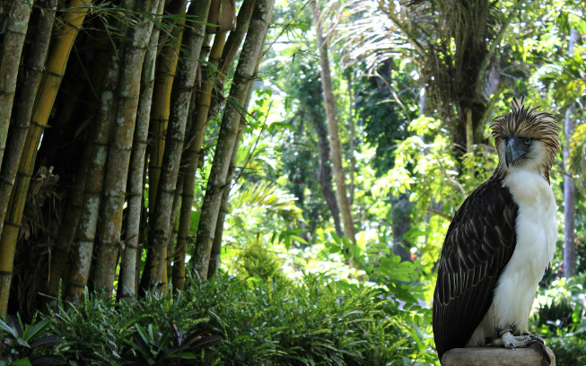
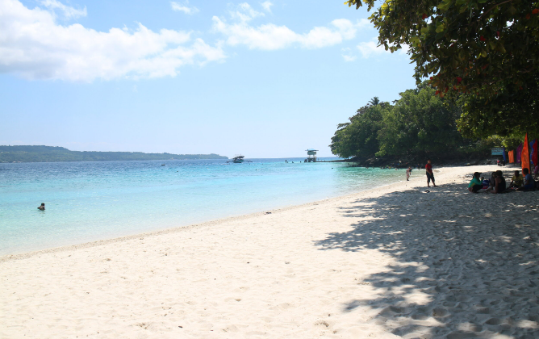
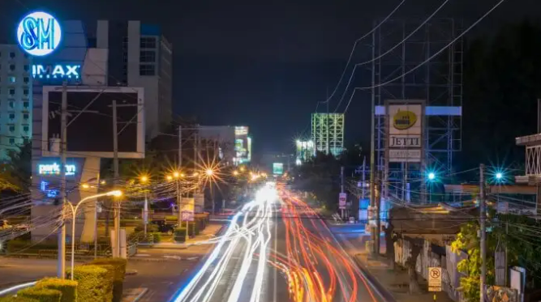

City Tour
To learn more about the rich culture of Davao City, one may visit the city's museums and parks that feature its cultural and historical values. Museo Davaoeño, where one may witness the lifestyle of Davaoeños through the artifacts and paintings of local artists, is just a 30-minute ride away from the airport. One may also take a glance at the "King of the Birds" or the Philippine Eagle at the Malagos Garden Resort, alongside other tropical plants and animals.

© Traveling Morion (https://www.travelingmorion.com/2016/08/davao-city-philippine-eagle-center-in.html)
Visit to Samal Island
Davaoeños take pride in the accessible white sand beaches in Samal Island. Pearl Farm Beach Resort and Discovery Samal are just some of the resorts that invite tourists to the city. After a long day in the city, one may easily, as it is just 30 minutes away from the city, visit Samal to relax and unwind.

© RPN Radio (https://rpnradio.com/samal-island-still-puts-high-restrictions-on-tourism-activities/)
Night Life
Aside from its beautiful beaches, night life in the city has also been helping boost its economy. More and more bars have made their names ring not just among the locals but even among those from outside the city. Because of the world-class hospitality and service at an affordable price, even Davao's 1:00 AM liquor ban cannot stop partygoers from enjoying the city's night life.

© Sushmita Ghangas (https://traveltriangle.com/blog/davao-city-nightlife/)